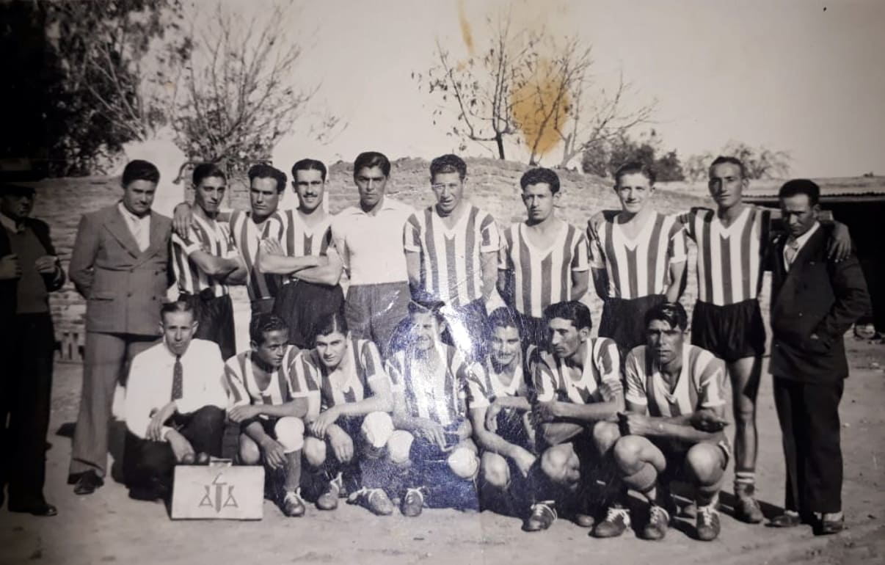
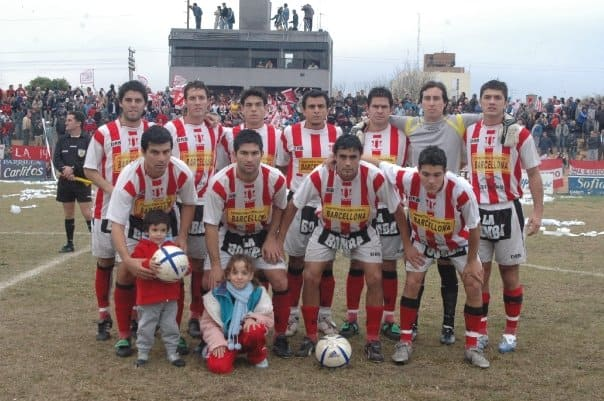
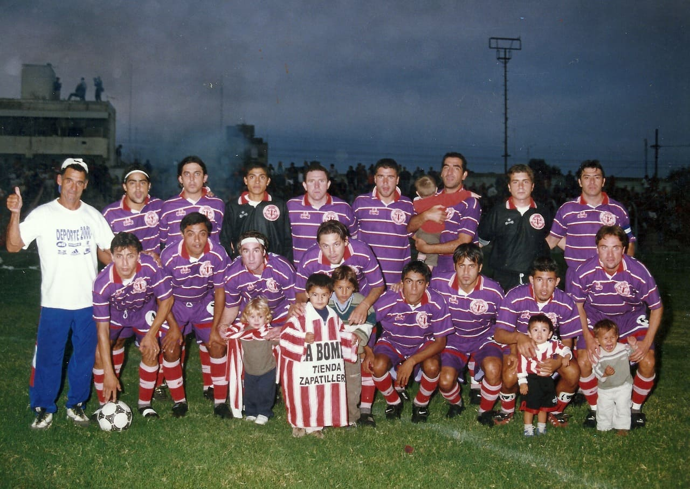
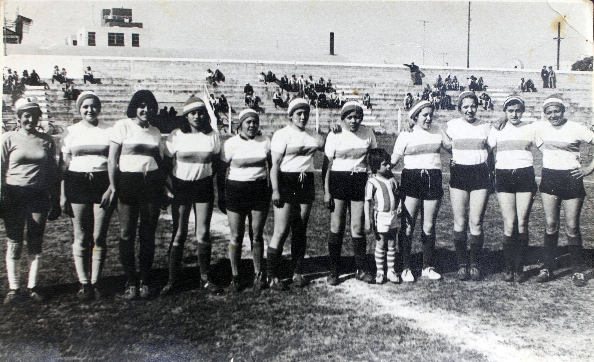
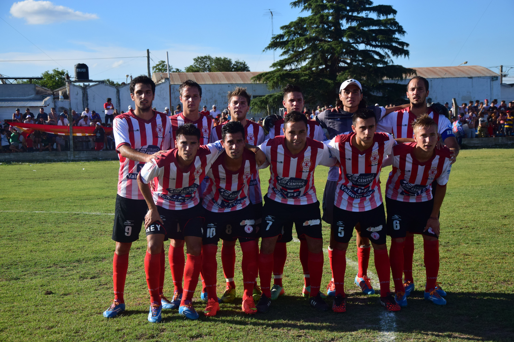

Equipos historicos del fortinero

Fromación de alumni de 1930
Esta foto es uno de los primeros registros del equipo de Alumni

Equipo del ascenso
En 2006 Alumni consiguio su maximo logro a nivel futbolistico Ascendiendo al torneo Argentino A, tercera categoria del futbol argentino.

Campeon Provincial
Alumni se consagra campeon del torneo interligas de 2001, el mismo fue organizado por la federacion cordobeza de futbol.

Futbol femenino 1978
En 1978 el Club Alumni presentaba su plantilla de jugadoras.

Equipo bicampeon
En 2014 Alumni salio bicampeon del torneo de la liga villamariense de futbol.